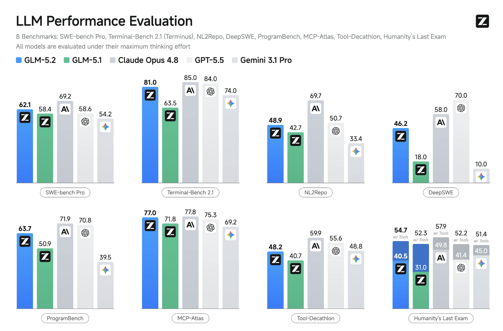
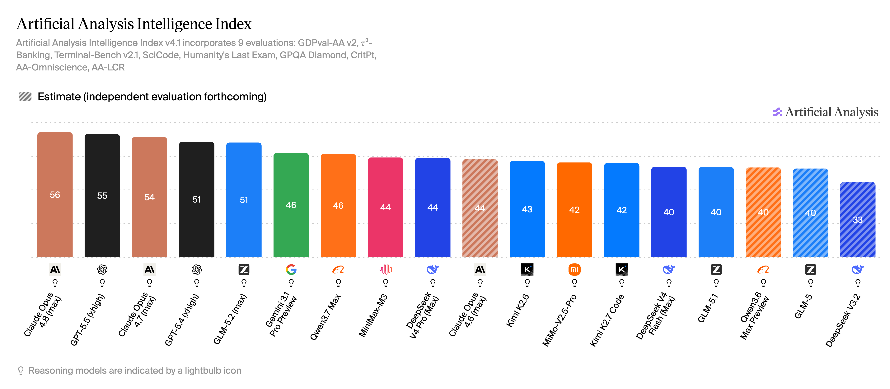
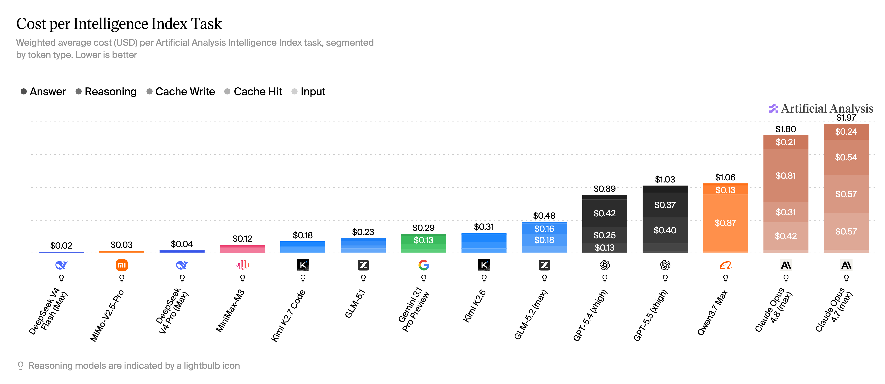
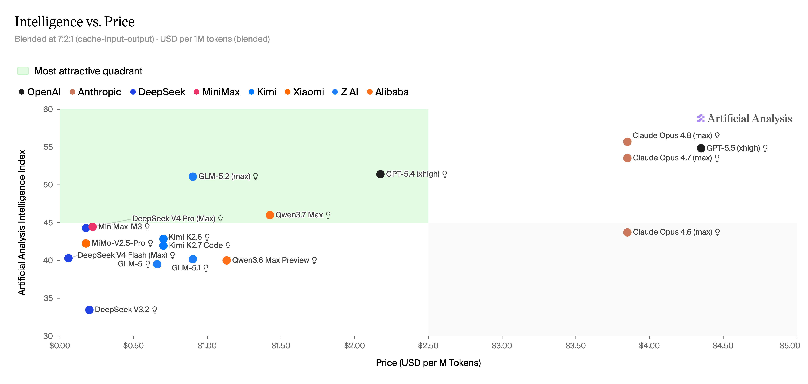
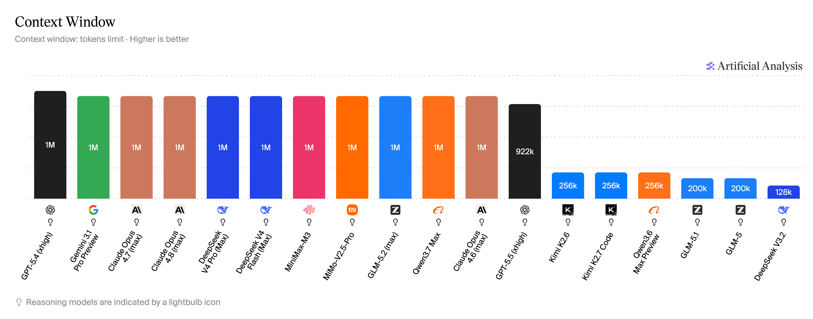
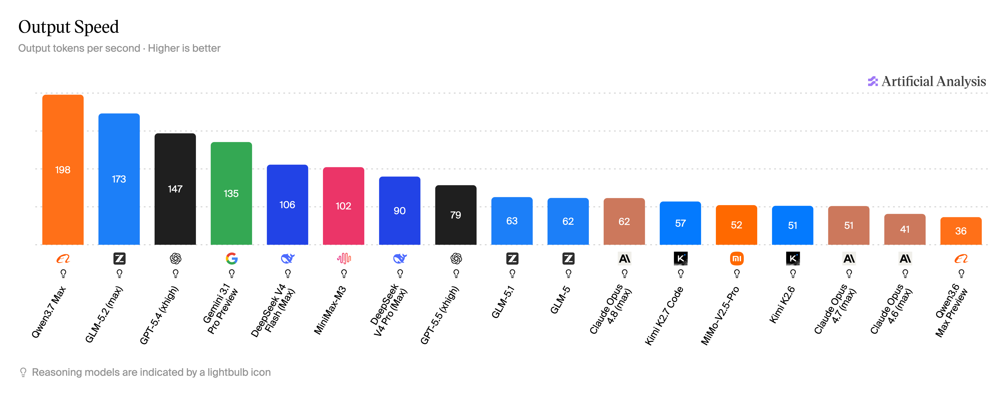

The team currently uses Claude Code with Anthropic models for coding tasks and skill-driven SDLC workflows. The target replacement is a self-hosted model, such as GLM-5.2, combined with an open-source or internal harness.
The evaluation goal is to decide whether the replacement stack can support daily engineering work with comparable capability, reliability, and operating cost.
The result should be reported as a complete stack, not as the model alone:
The framework uses two evaluation layers:
The baseline layer provides a compact PoC signal. It should use a small number of representative benchmarks instead of a broad benchmark suite.
| Selected Benchmark | Purpose | Primary Metrics |
|---|---|---|
| Terminal-Bench | Evaluates agentic terminal behavior: shell commands, debugging, file operations, environment navigation, and multi-step execution. | Task success rate, command error rate, time/task, failure category |
| SWE-bench Verified | Evaluates repo-level software engineering: issue understanding, code editing, regression fixing, and passing tests in real projects. | % resolved, test pass rate, time/task, tokens/task, cost/task |
Manually captured public screenshots for GLM-5.2 positioning. Treat these as market context only; the internal practical capability task results remain the adoption signal.






Can the self-hosted serving stack deliver acceptable latency, throughput, reliability, and cost when traffic passes through the inference engine and LLM gateway layers?
| Focus Area | Key Metrics |
|---|---|
| Inference engine | TTFT, TPOT / ITL, output tokens/sec, aggregate tokens/sec, GPU memory, GPU utilization |
| LLM gateway | Gateway overhead, p95 / p99 request latency, streaming stability, timeout rate, error rate |
| End-to-end stack | Max stable concurrency, requests/sec, tokens/sec under load, cost per 1M tokens, soak-test stability |
The long-horizon layer reuses existing SDLC projects to test whether the replacement stack can regenerate each stage artifact, from formal requirement to validation output, while preserving context, process quality, and workflow continuity. The generated candidate artifacts are judged against the original requirement context, the stage skill, prior artifacts, and the accepted Claude baseline.
Preserves requirements, constraints, decisions, and assumptions across stages.
Produces the expected deliverable for each stage well enough to move forward.
Moves the project forward coherently without drifting, restarting, or contradicting earlier work.
Makes outputs clear enough for a human to review, approve, or correct efficiently.
Promptfoo runs the local evaluation by loading each SDLC case, applying deterministic checks, and asking a judge model to score the candidate artifact against the rubric and baseline. The judge output is used as the primary scalable signal, while human review is used to calibrate the rubric and validate the scoring quality.
| Step | Purpose |
|---|---|
| Select sample | Pick a small but representative set, such as 5 projects across 2–3 SDLC stages. |
| Human score | Have reviewers score the same four metrics: context retention, stage completion, workflow continuity, and reviewability. |
| Compare judge | Check whether the LLM judge is too generous, too strict, or missing important workflow issues. |
| Tune rubric | Adjust judge prompts, scoring anchors, or hard checks before running the larger evaluation. |
This layer asks teammates to replay the daily work patterns they already know well and judge whether the self-hosted LLM is capable enough for real team use. Each task should be run against the candidate stack and, where possible, against the current Claude Code baseline using the same repository, prompt, time box, and acceptance criteria.
API, service, integration, and data-model changes.
UI behavior, state, accessibility, and integration tasks.
SQL, ETL, data quality, and analytics pipeline work.
Test design, defect reproduction, and regression confidence.
Requirement clarification, acceptance criteria, and traceability.
CI/CD, infrastructure, runtime, and operational tasks.
After rerunning a familiar daily task, the teammate scores the specific result produced by the self-hosted LLM. Use a 1–5 score for each dimension and write one short note explaining the score. The unit of judgment is the task output, not the reviewer’s overall feeling about the model.
| Dimension | Weight | What the Teammate Judges |
|---|---|---|
| Task completion | 30% | Did the output satisfy the requested task and acceptance criteria? |
| Correctness | 25% | Is the result technically and contextually correct for this system and domain? |
| Validation evidence | 20% | Does the result include or preserve enough evidence to prove it works? |
| Integration fit | 15% | Does the output fit the existing codebase, workflow, and artifact conventions? |
| Review effort | 10% | How much human correction is needed before the result can be accepted? |
The decision should be based on the full replacement stack: model, harness, and serving stack.
| Benchmark | Main Purpose | PoC Fit |
|---|---|---|
| SWE-bench Verified | Fix real GitHub issues in existing repositories. | Primary Best practical repo-level coding signal. |
| SWE-bench Pro | Harder, stricter software engineering benchmark. | Later Use after Verified if stronger frontier comparison is needed. |
| Terminal-Bench | Complete tasks through terminal commands and environment interaction. | Primary Best agentic shell and harness-behavior signal. |
| NL2Repo | Build or modify repositories from natural-language requirements. | Optional Useful for feature-building tasks, heavier than first PoC needs. |
| DeepSWE | Software engineering task completion in controlled environments. | Optional Good secondary coding-agent signal. |
| ProgramBench | Programming and code-generation task capability. | Optional More code-focused, less harness-focused. |
| BFCL | Function calling and tool-call correctness. | Optional Add if structured tool calling is central. |
| MCP-Atlas | MCP/tool workflow capability. | Optional Add if the platform depends heavily on MCP tools. |
| Tool-Decathlon | General tool-use across multiple task types. | Optional Useful for broader tool orchestration testing. |
| FrontierSWE | Long-horizon open-ended engineering projects. | Skip PoC Valuable but expensive and harder to reproduce. |
| PostTrainBench | Improve small models through post-training workflows. | Skip PoC Specialized ML-engineering signal. |
| SWE-Marathon | Ultra-long-horizon software engineering. | Skip PoC Too heavy for initial replacement validation. |
| HLE / GPQA / AIME / HMMT | General reasoning, science, and math intelligence. | Skip PoC Useful model-marketing signal, less direct for harness replacement. |
| Metric | Meaning | Why It Matters |
|---|---|---|
| TTFT | Time to first token after the request is sent. | Measures perceived responsiveness for chat and agent workflows. |
| TPOT / ITL | Time per output token, also called inter-token latency. | Shows how smooth and fast streaming feels after generation starts. |
| Output tokens/sec | Generation speed for one request. | Useful for comparing model and inference-engine speed on the same prompt set. |
| Aggregate tokens/sec | Total tokens produced across concurrent requests. | Measures serving capacity under load, not just single-user speed. |
| GPU memory | Peak and steady memory used by model weights, KV cache, and runtime overhead. | Determines model size, context length, batching headroom, and hardware cost. |
| GPU utilization | How much of the GPU compute capacity is actively used. | Helps identify underused hardware, bottlenecks, or inefficient batching. |
| Gateway overhead | Extra latency added by routing, auth, logging, policy, and protocol translation. | Separates pure inference speed from platform-layer cost. |
| p95 / p99 latency | Request latency at the 95th and 99th percentile. | Captures tail latency that affects real users more than averages. |
| Streaming stability | Whether streaming responses remain continuous without stalls or broken chunks. | Important for coding agents because interrupted streams can break tool loops. |
| Timeout rate | Percentage of requests that exceed the configured timeout. | Shows whether long prompts or long generations are reliable enough. |
| Error rate | Percentage of failed requests, including 4xx, 5xx, provider, and gateway errors. | Measures operational reliability of the full serving path. |
| Max stable concurrency | Highest concurrent request level that keeps latency and errors within acceptable range. | Defines practical capacity before the service becomes unstable. |
| Requests/sec | Number of completed requests per second. | Useful for workload planning when request sizes are relatively consistent. |
| Tokens/sec under load | Total throughput while multiple users or agents are active. | Measures real serving throughput for production-like traffic. |
| Cost per 1M tokens | Estimated infrastructure or provider cost normalized by token volume. | Connects performance results to economic feasibility. |
| Soak-test stability | Whether the service remains healthy during a long sustained load test. | Finds memory leaks, queue buildup, degradation, and restart patterns. |
{kind=link}
{kind=link}
{kind=link}
{kind=link}
{kind=link}
{kind=link}